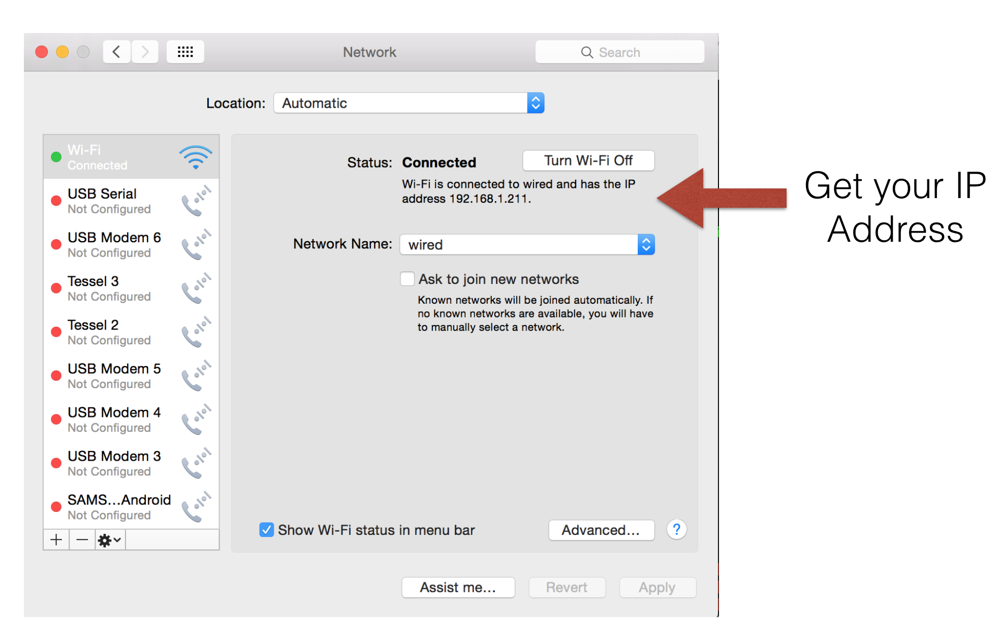
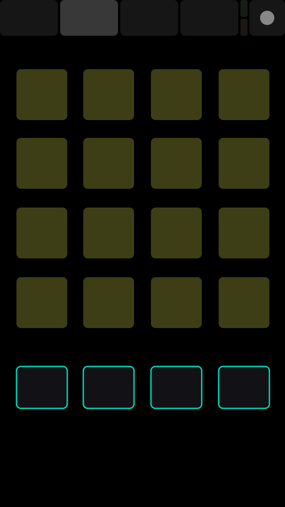
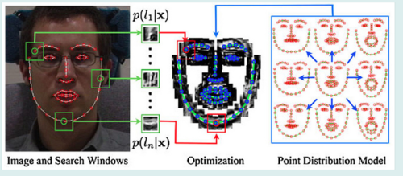
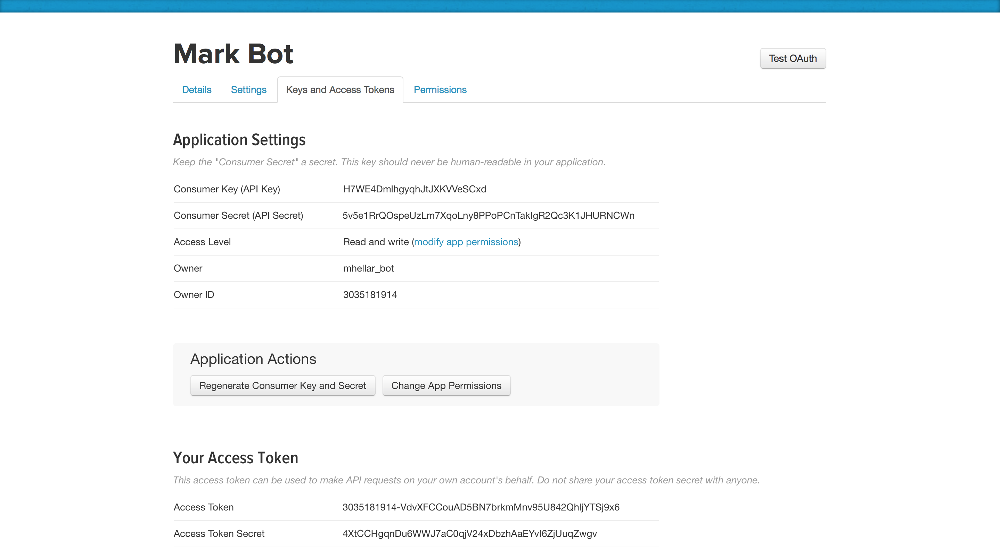
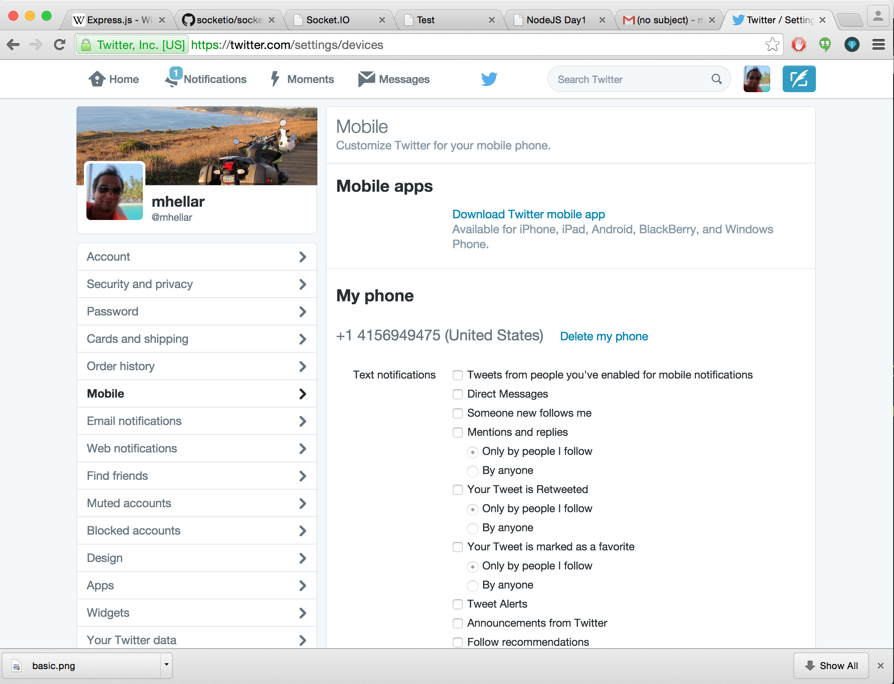

Code is here:
http://bit.ly/2eWU4DL
Predicting Bart
From the terminal:
'cd bart'
'npm install'
'node app.js'
Bart API
Building out a basic web application with express.
Express.js is a Node.js web application server framework, designed for building single-page, multi-page, and hybrid web applications. It is the de facto standard server framework for node.js
Hello World
var express = require('express');
var app = express();
app.get('/', function (req, res) {
res.send('Hello World!');
});
app.listen(3000, function () {
console.log('Example app listening on port 3000!');
});
req is an object containing information about the HTTP request that raised the event. In response to req, you use res to send back the desired HTTP response.
We can also serve files:
- Make a new folder called webserver
- Open the terminal and type 'cd' + SPACE + drag folder onto the terminal
- Type 'npm init'
- Fill out the questions
Install Express
Type: sudo npm install --express
- Create a new file in Sublime
- Enter the code below:
- Save as 'index.js' in your new folder
//import express
var express = require('express');
//create express object named app
var app = express();
//instantiate a server on port 3030
var server = app.listen(3030);
//expose the local public folder for inluding files js, css etc..
app.use(express.static('public'));
//on a request to / serve index.html
app.get('/', function(req, res) {
res.sendFile(__dirname + '/index.html');
});
- Create a new file in Sublime
- Enter the code below without the comments:
- Save as 'index.html' in your new folder
Open http://localhost:3030/ in the browser
Takes a few minutes to add some html to the page
Nodemon is a handy tool
sudo npm install -g nodemon
use nodemon in place of node and your app will restart anytime you save a change.
Websockets:
HTML5 WebSocket represents the first major upgrade in the history of web communications. Before WebSocket, all communication between web clients and servers relied only on HTTP. Now, dynamic data can flow freely over WebSocket connections that are persistent (always on), full duplex (simultaneously bi-directional) and blazingly fast.
Socket.io
Socket.IO enables real-time bidirectional event-based communication.
CD to websocket_simple
npm Install
node app.js
Let's Combine Express, Websockets and OSC

Set your phone and laptop to wifi 'extreme'
Password 'extreme!!!'
Open your system preferences, the click the network icon


Choose the simple layout in TouchOSC app
CD OSC in the code folder
run 'node app.js
Choose a layout
And program to talk to your page
Now try osc_fancy
run 'node app.js
Now try osc_sound
run 'node app.js
Now try osc_shader
run 'node app.js
Now try osc_p5js
run 'node app.js
FaceOSC
try faceosc
Talking to Twitter

Go Here:
https://apps.twitter.com/

create a new app
Gather tokens and keys

Enter mobile phone # in settings

Update code in code/twitter-ard/app.js
var client = new Twitter({
consumer_key: 'Enter Here',
consumer_secret: 'Enter Here',
access_token_key: 'Enter Here',
access_token_secret: 'Enter Here'
})
From the terminal:
'cd twitter'
'node app.js'
Twitter API Reference
Here